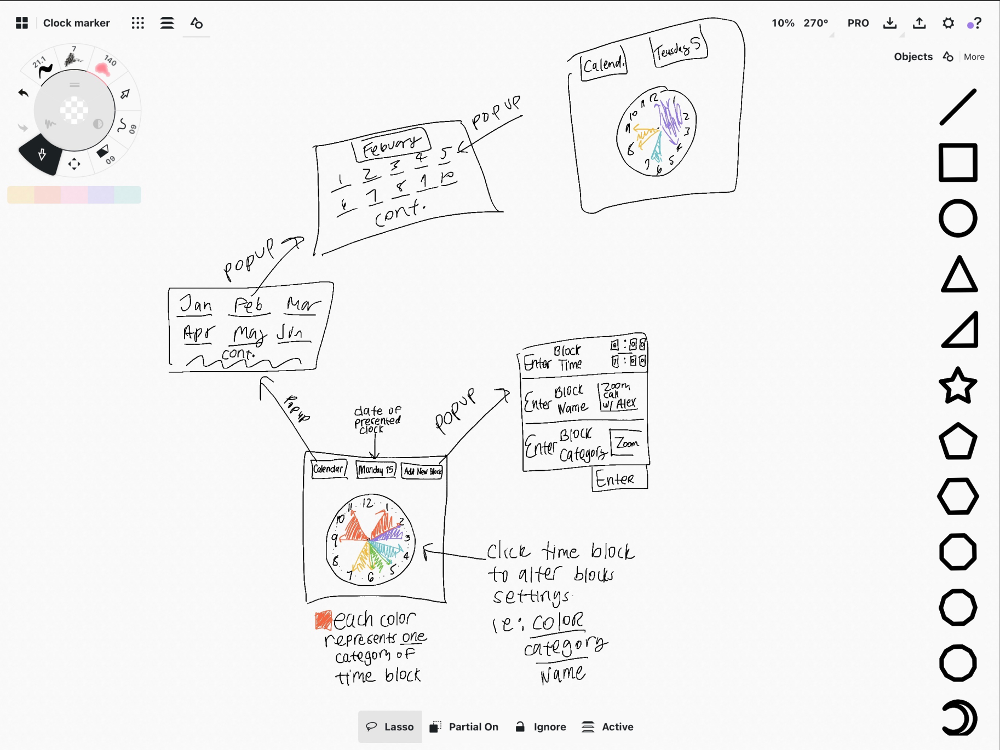
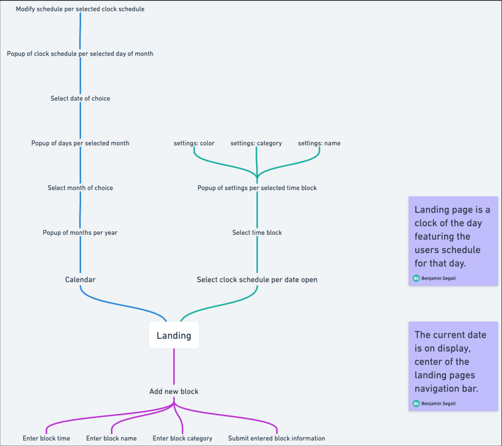
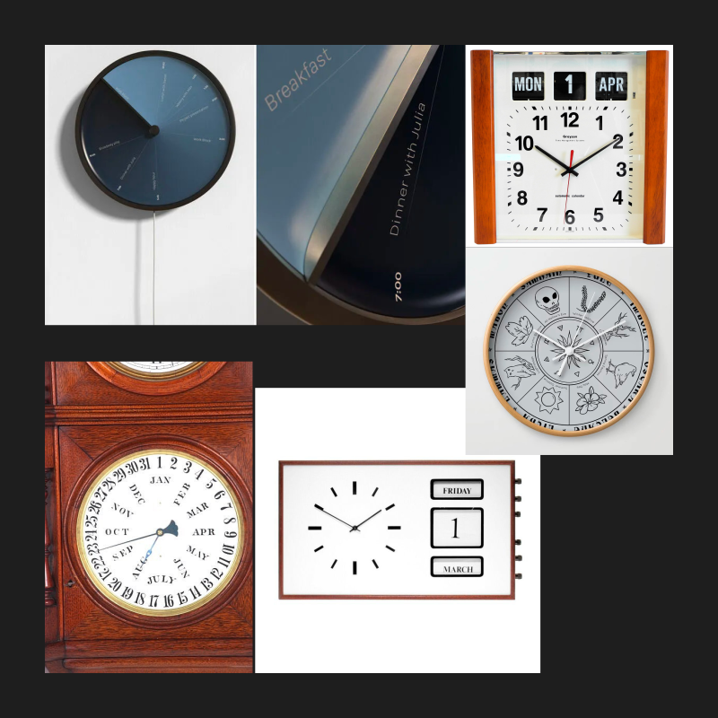
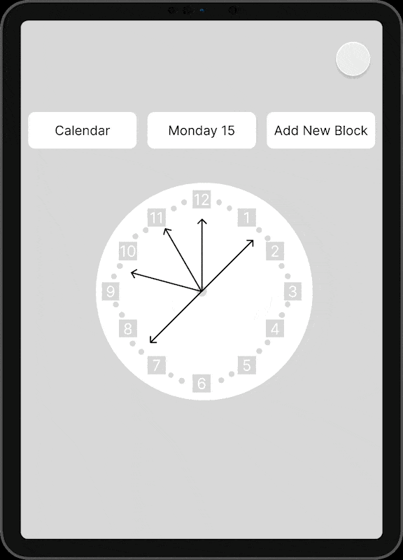
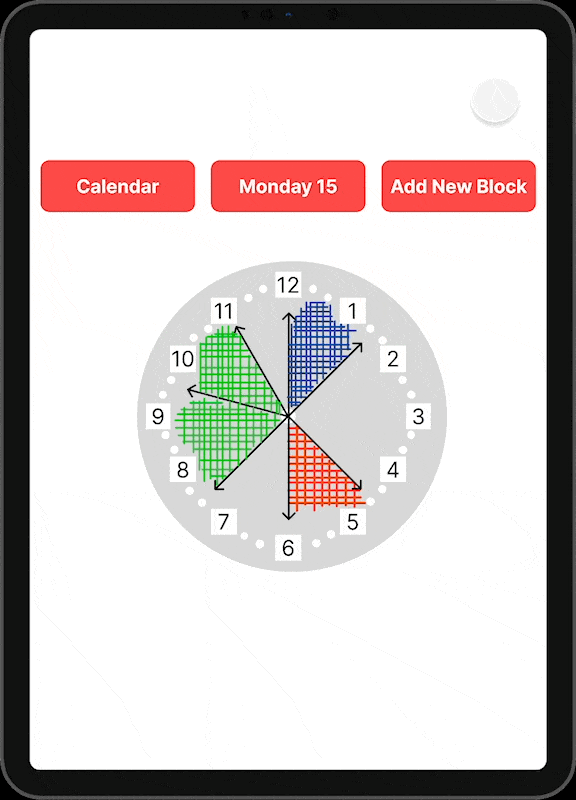

Case Study
Design Problem
Keeping track of the day's events is a task many productivity-minded individuals engage in to help organize their days and lives. In a market where users are increasingly diverse in their needs, some individuals may benefit from a more visual map of their schedules. While most schedules or to-dos are in lists or charts, these more spatially inclined customers may be better off using a program that provides these needed visuals.
User Persona
The ideal customer is a man named Adam. Adam is in their 30’s and lives with their partner. They are a high school graduate and work part-time. Adam lives in San Francisco, is very familiar with your product and is passionate about productivity and efficiency.
Solution Hypothesis
How would a visual clock benefit spatially inclined customers and increase their ability to organize their tasks? The major issue facing spatially-minded customers with lists, charts, etc. Is that these methods of maps fail to induce the feeling of time passing throughout the day. A list containing timed events does nothing to provide context for the user surrounding the pace at which they should complete tasks to keep on track.
 Challenges I faced
The major challenges in the design of this app were how to best illustrate the addition and editing of events on the clock and the clock itself. Specifically the design language of the clock. The geography of buttons and popups, and the visual themes of color choices.
I gathered inspiration from other designs in coming to a conclusion on how to address these challenges. With more experimentation, more effective designs for this product could be produced.
Solution Experiments
How my solution solves the problem
This method of tracking daily tasks aids the user in creating a better mental association between the time on the clock and the time passing through the day. It also aids in estimating and tracking the time in completing tasks. Setting up the user for improved productivity and giving the user confidence in being able to manage their tasks.
Closing remarks
For spatially-minded customers, being able to visualize time is crucial for effectively completing tasks and solving problems on a schedule. A clock schedule, unlike lists, charts and the like is uniquely able to deliver visuals that engage the user to better measure the time mapped and estimate the time allotment per task, pushing the user to complete tasks faster and with less room for failure or delay.
